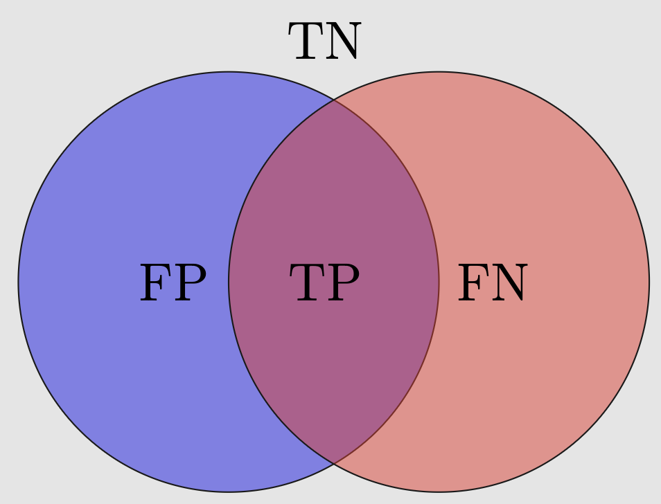

function sigmoid(x, k=1, x0=0) {
return 1 / (1 + Math.exp(-k * (x - x0)));
}
data = {
const points = [];
for (let x = -10; x <= 10; x += 0.1) {
points.push({ x: x, y: sigmoid(x, 1, 0) });
}
return points;
}Binary Logistic Regression
43 minutes
The binary classification problem assumes that the output set \mathcal{Y} has two unordered, discrete labels or classes: \mathcal{Y}=\{\tt 0, \tt 1\}; and, the label of each sample is exactly one of them. Examples include predicting
- admission to an academic program based on standardized test scores,
- credit card default using their spending behavior,
- breast cancer diagnosis, etc.
We use Binary Logistic Regression (a.k.a., Sigmoid Regression) to solve the binary classification problem.
Recall that there are d predictors or features (x_1, x_2, \ldots, x_d). For notational convenience with weights, we preppend 1 to the vector when denoting our feature vector, i.e., \bold{x}=(1, x_1, x_2, \ldots, x_d) is a (d+1)-vector.
In case d=1, the problem is called univariate, otherwise multivariate.
Model Assumptions
We always assume that the underlying rule f is unknowable to us, much like a “blackbox”. In binary logistic regression, we make two model assumptions about the blackbox:
the conditional probability p(y\mid \bold{x}) follows a Bernoulli distribution1 with mean \mu(\bold{x});
the conditional mean \mu(\bold{x}) is the sigmoid2 of a linear function of \bold{x}, i.e., \mu(\bold{x})=\frac{1}{1+e^{-(\bold{x}\bold{w}^T)}}.
The (d+1) weights w_0, w_1, \ldots, w_d are the parameters \pmb{\theta} of the model. Since the number of parameters does not grow with the size of the data, this is a parametric model.
Since, we are making a model assumption in terms of the conditional probability for the first time in this course, it deserves an explanation. Feel free to digress to a motivating example before continuing.
Mathematical Formulation
We now describe the mathematical formulation for the multivariate case with d\geq1 predictors x_1, x_2, \ldots, x_d. The key components are the following:
- Feature vector: \bold{x}=(1, x_1, \ldots, x_d)
- Binary output: y={\tt 0}\text{ or }{\tt 1}
- Model weights: \bold{w}=(w_0, w_1, \ldots, w_d)
- w_0 is called the bias or intercept
As per our model assumption, we have p({\tt 1}\mid\bold{x}; \bold{w})= \frac{1}{1+e^{-(\bold{x}\bold{w}^T)}} =\frac{1}{1+e^{-(w_0+w_1x_1+\ldots+w_dx_d)}} \tag{1}
Learning and Prediction
Given a dataset \mathcal{D}=\{(\bold{x}_i, y_i)\}_{i=1}^N of size N from the blackbox f, we learn an approximation \hat{f} by learning the weights \bold{w}.
Here, each (boldfaced) input \bold{x}_i represents a vector (1, x_{i1}, x_{i2}, \ldots, x_{id}) and corresponding output y_i is either \tt 1 or \tt 0.
If \bold{w}^*=(w_0^*, w_1^*, \ldots, w_d^*) denotes our learned weights, we can write from Equation 1 our learned class probability for y=\tt 1: \hat{p}({\tt 1}\mid \bold{x};\bold{w}^*) =\frac{1}{1+e^{-(w^*_0+w^*_1x_1+\ldots+w^*_dx_d)}} \tag{2}
Using Equation 2, we can then predict the label or class of new data point with feature vector \bold{x} using a threshold function. For example, the following classifier uses a threshold of 0.5: \hat{y}=\begin{cases} {\tt 1}&\text{ if }\hat{p}({\tt 1}\mid\bold{x};\bold{w}^*)\geq0.5 \\ {\tt 0}&\text{ if }\hat{p}({\tt 1}\mid\bold{x};\bold{w}^*)<0.5. \end{cases} \tag{3}
Loss Function and Optimization
Now, we turn our attention to finding the best or optimal weights, w.r.t. some notion of loss or error. We use the Maximum Likelihood Estimator (a.k.a. MLE) to maximize the odds or probability of the occurrence of the given data \mathcal{D} across all choices of the weights.
Since the data is i.i.d., the likelihood of the dataset \mathcal{D} is given by: p(\mathcal{D}; \bold{w})\coloneqq \prod_{i=1}^N p(y_i\mid \bold{x}_i; \bold{w}).
Using the above model assumptions, we can write the likelihood as: p(\mathcal{D}; \bold{w}) =\prod_{i=1}^N p({\tt 1}\mid\bold{x}_i)^{y_i}[1-p({\tt 1}\mid\bold{x}_i)]^{1-y_i}. The log likelihood \mathrm{LL}(\bold{w}) as: \begin{aligned} \log{p(\mathcal{D}; \bold{w})} &=\log{\left(\prod_{i=1}^N p({\tt 1}\mid\bold{x}_i)^{y_i}[1-p({\tt 1}\mid\bold{x}_i)]^{1-y_i}\right)} \\ &=\sum_{i=1}^N \log{\left(p({\tt 1}\mid\bold{x}_i)^{y_i}[1-p({\tt 1}\mid\bold{x}_i)]^{1-y_i}\right)} \\ &=\sum_{i=1}^N y_i\log{p({\tt 1}\mid\bold{x}_i)}+(1-y_i)\log{[1-p({\tt 1}\mid\bold{x}_i)]}. \end{aligned}Finally, the loss function \bold{\mathcal L}(\bold{w}), known as Average Binomial Cross Entropy, is given by the average negative log likelihood: \bold{\mathcal L}(\bold{w}) \coloneqq-\frac{1}{N}\sum_{i=1}^N y_i\log{p({\tt 1}\mid\bold{x}_i)}+(1-y_i)\log{[1-p({\tt 1}\mid\bold{x}_i)]}, \tag{4} where p({\tt 1}\mid \bold{x};\bold{w}) is as assumed in Equation 1.
Minimizing \bold{\mathcal L}(\bold{w}) across all possible weights \pmb{w}\in\mathbb{R}^(d+1) to find the optimal weight \pmb{w}^* is a computationally challenging problem. One would traditionally use the Gradient Descent to solve the optimization problem.
We will use scikit-learn in this course. Once the optimal weights have been found, Equation 3 can be used to propose a classifier.
Metrics for Classification
In regression, we used metrics like the Mean Squared Error (MSE) and \mathcal{R}^2 as metrics for “good of fit”. In classification, we use a different set of metrics:
- Confusion Matrix
- (Overall) Accuracy
- (Class-specific) Precision, Recall, and F1-score
Confusion Matrix
In binary classification problem, the confusion matrix is a 2\times2 matrix that captures to what degree a classifier misclassifies the (training/test) data.
Using the convention that \tt 1=POSITIVE and \tt 0=NEGATIVE, we define:
- \text{\color{green}True Positive} (TP): an observation is classified by the classifier as
POSITIVEwhile its original label wasPOSITIVE, as desired; - \text{\color{green}True Negative} (TN): an observation is classified by the classifier as
NEGATIVEwhile its original label isNEGATIVE, as desired; - \text{\color{red}False Positive} (FP): an observation is (mis)classified by the classifier as
POSITIVEwhile its original label isNEGATIVE; - \text{\color{red}False Negative} (FN): an observation is (mis)classified by the classifier as
NEGATIVEwhile its original label wasPOSITIVE;
Since the above cases are exhaustive, we have the following Venn diagram:

A yet better representation scheme is reporting the number of observations that fall into the above four cases as a matrix: the confusion matrix:
Accuracy
The accuracy measures the rate of the correct classification: acc = \frac{TP+TN}{TP+TN+FP+FN} \tag{5}
For imbalanced data, it’s recommended to class-specific precision as a more robust performance metric for a classifier.
Precision
The precision of a class measures the rate of the correct classification among labels classified as the class: p_{\tt 1} = \frac{TP}{TP+FP}\text{ and } p_{\tt 0} = \frac{TN}{TN+FN}. \tag{6}
Recall
The recall of a class measures the rate of the correct classification among true labels in that class: r_{\tt 1} = \frac{TP}{TP+FN}\text{ and } r_{\tt 0} = \frac{TN}{TN+FP} \tag{7}
F1-score
The F1 score of the positive and negative classes are defined, respectively, as follows: f_{\tt 1} = \frac{2p_{\tt 1}r_{\tt 1}}{p_{\tt 1}+r_{\tt 1}}\text{ and } f_{\tt 0} = \frac{2p_{\tt 0}r_{\tt 0}}{p_{\tt 0}+r_{\tt 0}}. \tag{8}
Why Harmonic Mean?
To understand why we use the harmonic mean instead of the arithmetic mean, (p_{\tt 1} + r_{\tt 1})/2, in the definition of f_{\tt 1} consider the following scenario:
Suppose we recall all entries, so \hat{y}_i = \tt 1 for all i, and r_{\tt 1} = 1. However, the precision p_{\tt 1} can still be very low, say 10^{-4}.
- The arithmetic mean of p_{\tt 1} and r_{\tt 1} is given by (10^{-4} + 1)/2 \approx 50\%
- By contrast, the harmonic mean is only \frac{2 \times 10^{-4} \times 1}{10^{-4} + 1} \approx 0.02\%
In general, the harmonic mean is more conservative, and requires both precision and recall to be high.
A Motivating Example
Let us consider a practical binary classification problem with just one predictor. We ask how GW offers admission to a student? In order to keep our example simple, we base our analysis around just one predictor: SAT scores.
In our analysis, the only feature x is SAT score in the range [400, 1600], and the output y\in\{{\tt 0},{\tt 1}\} with \tt 1=Admission offered and \tt 0=Not offered.
As always, the rule or mapping f that GW applies to decide the output is assumed to be unknowable. Nonetheless, we can always give f a nudge to give us i.i.d. data for training.
The Data
Choose N below to get a sample \mathcal{D}=\{(x_i, y_i)\}_{i=1}^N:
Let take a look at our \mathcal{D}:
Let’s also plot the data:
Logistic Regression
We now decide to use logistic regression to develop our own classifier that will hopefully approximate GW’s mysterious admission rule f with high accuracy.
In logistic regression, we have two model assumptions. The mathematical formulation of the assumptions is already presented. Here, we plainly discuss what the assumptions mean this our context.
Let us assume that that insider told you that instead of a holistic assessment, GW uses the following naive rule f to offer admission, solely based on an applicant’s SAT score x.
the rule first takes a weighted SAT of the applicant x\mapsto w_0+w_1x
then Sigmoid is applied on the weighted score to make it a positive fraction w_0+w_1x\mapsto\mathrm{sigm}(w_0+w_1x)
finally, a coin with probability of HEADS equals \mathrm{sigm}(w_0+w_1x) is tossed.
the applicant is offered admission if the outcome from the toss render HEADS, otherwise not.
The only critical information your insider did not have access to were the weights w_0 and w_1!
Guessing the Solution
Recall that the loss \bold{\mathcal{L}}(\mathcal{D}; w_0, w_1) as given in Equation 4 can be computed for any weights w_0, w_1 of your choice.
We can bruteforce the optimization by plotting the incurred loss for a variety of choices for the weights. In the following surface represents the loss:
Your Classifier
Find the optimal weights w_0^*, w^*_1.
Confusion Matrix: